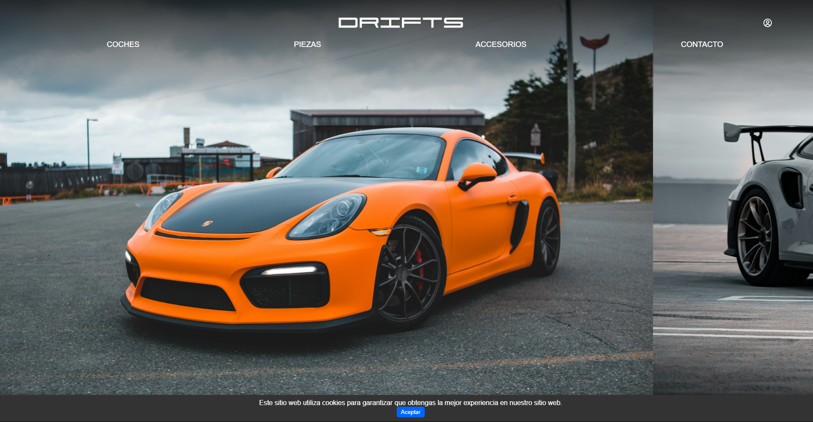
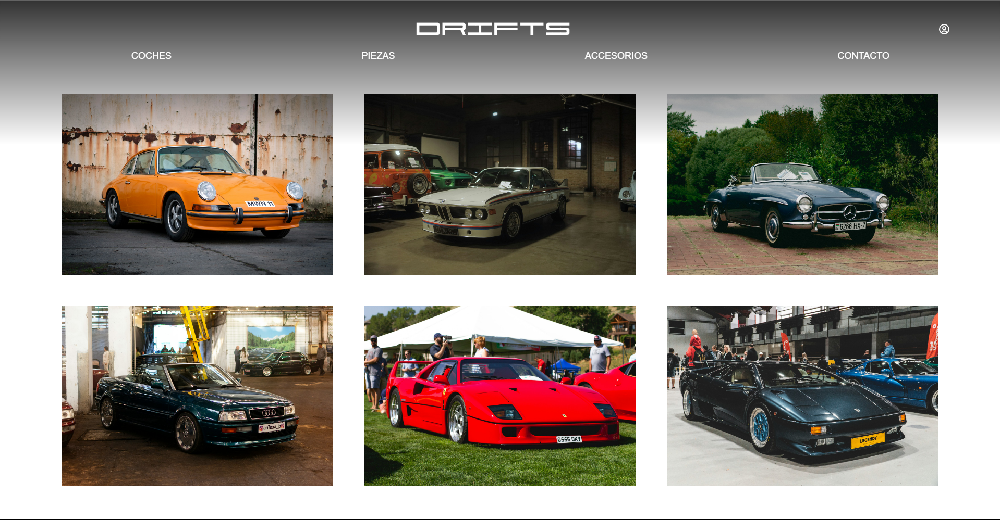

Proyecto Final SMR
 HTML
HTML CSS
CSS JavaScript
JavaScript
Este proyecto es mi trabajo final de grado medio, una tienda online llamada DRIFTS, especializada en coches. Ofrece una variedad de vehículos, desde deportivos hasta clásicos y todoterrenos, además de secciones para llantas, alerones y vinilos populares del mundo del motor. ¿Te atreves a descubrir tu coche ideal?